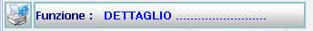
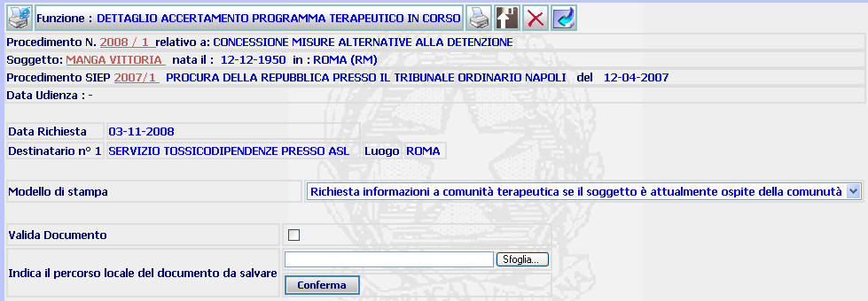
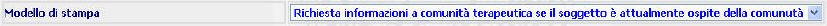

DETTAGLIO ATTO ISTRUTTORIO ( quello richiesto): La funzione consente di visualizzare il dettaglio dell'atto istruttorio richiesto (con indicazione della data richiesta e dei destinatari) e di generare la stampa del relativo documento
LE MASCHERE VIDEO
La funzione viene realizzata attraverso la maschera seguente (a titolo di esempio si propone quella dell'atto "Accertamento programma terapeutico in corso") in cui compare il dettaglio dell'atto richiesto e dalla quale è possibile generare la stampa del documento.
A secondo della tipologia dell'atto richiesto in corrispondenza della barra funzione comparirà il nome dell'atto in questione:


COME FARE PER ...
| Per visualizzare il dettaglio del procedimento Sius l'utente deve cliccare sul link relativo all'Anno/Numero del procedimento Sius evidenziato in rosso; |

| Per visualizzare il dettaglio del soggetto l'utente deve cliccare sul link relativo al cognome/nome del soggetto evidenziato in rosso; |

| Per visualizzare il dettaglio del procedimento Siep l'utente deve cliccare sul link relativo all' Anno/Numero del procedimento Siep evidenziato in rosso; |

| Per generare la stampa dell'atto istruttorio descritto l'utente deve |
- selezionare il "modello di stampa" attraverso la relativa tendina

- cliccare sul pulsante
di generazione stampa;
| Per attivare il processo di validazione l'utente deve svolger la funzione di Validazione del documento: |
| Per validare un documento, senza dover generare la stampa del documento stesso, l'utente deve selezionare il pulsante (upload di stampa) ; |
| Per
cancellare l'atto prodotto
l'utente deve
cliccare sul pulsante
|
|
Per
tornare alla maschera precedente l'utente
deve selezionare il pulsante
|
CAMPI
I campi da compilare sono i seguenti:
| Modello di stampa | Campo contenente l'elenco dei modelli di stampa legati all'atto istruttorio richiesto |
| Percorso locale del documento da salvare | Percorso del file da indicare opzionalmente durante il processo di validazione |
PULSANTI
Oltre ai pulsanti
 ,
,
 e
e
 , facenti parte del gruppo di
pulsanti di "Uso Comune" sono
presenti i seguenti pulsanti:
, facenti parte del gruppo di
pulsanti di "Uso Comune" sono
presenti i seguenti pulsanti:
|
PULSANTE |
DESCRIZIONE |
|
|
Questo pulsante ha lo
scopo di generare la stampa del documento istruttorio richiesto |
|
|
Questo pulsante ha lo scopo di consentire la validazione del documento quando non venga generata la stampa del documento stesso. |
BOTTONI
Oltre ai comandi funzionali relativi al menù verticale sono presenti i seguenti bottoni:
|
COMANDI |
DESCRIZIONE |
|
|
Attraverso questo comando l'utente conferma i dati inseriti nella maschera |
|
|
Attraverso questo comando l'utente può cercare il documento modificato, ovvero quello non prodotto dal sistema, nel drive nel quale è stato salvato. |